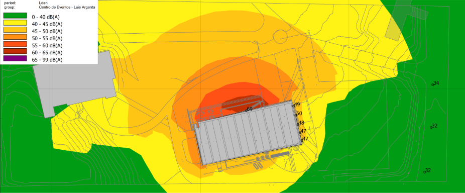

Centro de Eventos - Vinícola Luis Argenta
Isolamento e condicionamento acústico
O projeto parte da necessidade de isolamento acústico a fim de reduzir perturbações sonoras sobre a vizinhança no entorno, de modo a cumprir com as exigências da NBR 10.151 e NBR 10.152, assim como a Lei Municipal de Flores da Cunha, onde o local é situado. Outra finalidade do trabalho foi assegurar bom controle sonoro sobre a área do Hall da edificação, por meio de isolamento acústico adequado em relação ao Salão de Festas, considerado a principal fonte sonora emissora. Para o estudo acústico, o projeto parte da Norma ISO 12354-4 para estimar os níveis de pressão sonoros nas regiões internas, e também adjacentes à edificação emissora. A imagem abaixo representa a fachada principal da edificação, desenhada pela Biazus Arquitetura.

Para a construção do projeto, foi considerada a premissa de que seria emitido um nível sonoro máximo de 95dB dentro do salão, dado que as finalidades de uso no local seriam eventos musicais, casamentos e festas. A partir dessa premissa, foi realizado o estudo a fim de propor o sistema estrutural mais adequado para o local. A imagem abaixo corresponde a um mapa de cores, obtido por simulação acústica, que relaciona as regiões da planta de situação do local com seus correspondentes níveis de pressão sonora, representados por tons de cores, a fim de descrever o ruído produzido pela edificação em seus arredores e refletir a eficiência do sistema proposto para as partições das divisórias da edificação. À medida que as cores tomam tons mais quentes, níveis de pressão sonora mais elevados são pronunciados. Na imagem, também se apresentam uma série de pontos com valores correspondentes. Esses valores correspondem aos níveis de pressão sonora esperados para um receptor (ou indivíduo) que estiver naquele lugar no horário de funcionamento do Centro de Eventos. No caso dessa edificação, revela-se um valor muito mais expressivo na parte de cima (69dB) da planta baixa da edificação do que na lateral direita (por volta de 49dB). Essa ocorrência se deve ao fato de que, na região de maior nível sonoro, as paredes seriam compostas predominantemente por vidros, que na ótica da acústica são partições mais sensíveis quanto ao desempenho em isolamento sonoro do que paredes de alvenaria ou gesso acartonado. Os outros valores, na região verde da imagem, são os níveis sonoros esperados para a vizinhança mais próxima da edificação (situada a aproximadamente 100m de distância do local de estudo), que viria a sofrer maior impacto quanto ao som produzido no Centro de Eventos. Na simulação, o valor máximo de incidência sonora esperado para as regiões vizinhas mais próximas seria de 34dB, o que, de acordo com a NBR 10.151 e a Lei Municipal de Flores da Cunha, é um valor bastante satisfatório, que atende perfeitamente a lei e não causará problemas de distúrbio do sossego dos moradores da região devido a eventos sonoros produzidos na edificação.
